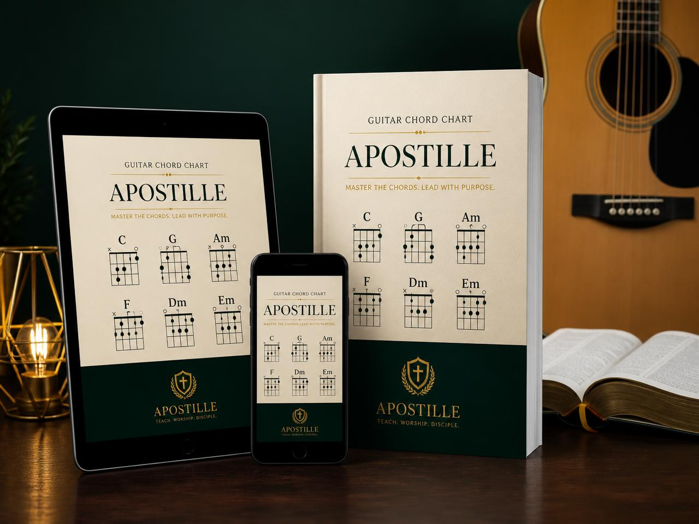

Tire o violão do armário e toque seus primeiros louvores em até 7 dias com apenas 3 acordes simples.
Sem teorias cansativas, sem pestana dolorosa e sem se perder em vídeos soltos na internet. O método prático e 100% visual para você acompanhar os louvores mais amados na igreja e na sua família.
Mais de 1.840 cristãos já destravaram as mãos
Método testado por donas de casa, pais de família, jovens e pastores
De R$ 197,00 por
Pagamento único • Sem mensalidades
🎵 Louvores consagrados que você conseguirá tocar com apenas 3 acordes:
Você comprou ou ganhou um violão com o sonho de adorar a Deus... Mas aí aconteceu isso:
Excesso de Teoria no YouTube
Você abriu vídeos gratuitos e se deparou com termos complicados, escalas gregas e professores que tocam rápido demais sem explicar como posicionar a mão.
A Tortura da Pestana (Fá Maior)
Logo na primeira aula mandam você esmagar as seis cordas com o dedo indicador. Os dedos doem, o som sai abafado e parece que sua mão não nasceu para aquilo.
A Troca de Acordes Trava o Ritmo
Toda vez que você vai mudar de um acorde para outro, precisa parar a batida, olhar para o braço e ajeitar dedo por dedo. A música perde a graça.
O Violão Encostado e a Frustração
Com o tempo, o violão vai para cima do guarda-roupa ou fica pegando poeira no canto do quarto. E você fica achando que "não tem o dom da música".
A VERDADEIRA CAUSA:
O problema NUNCA foi a sua idade, a grossura dos seus dedos ou a falta de talento.
O problema é que ninguém te ensinou pelo caminho prático. Você não precisa aprender 50 acordes para louvar a Deus. A grande maioria dos hinos e cânticos de adoração foi composta sobre a mesma harmonia de apenas 3 acordes simples!
Como funciona a técnica dos "Dedos Âncora"?
Veja exatamente como a posição dos dedos é simples e anatômica. Repare que os dedos marcados em dourado (3 e 4) quase não saem do lugar durante a transição:
🟡 Dedos 3 e 4: Fixos na base (Âncora).
🟢 Dedos 1 e 2: Apoiam suavemente em cima.
🟡 Não tire a mão! Os dedos 3 e 4 continuam no mesmo lugar exato.
🟢 Dedos 1 e 2: Apenas descem 1 corda.
🟡 Dedo 3 permanece apoiado: Guia de segurança para a mão.
🟢 Dedos 1 e 2: Encaixam naturalmente nas cordas de baixo.
Com essa combinação anatômica, seu cérebro memoriza as posições em menos de 48 horas.
QUERO APRENDER ESSES 3 ACORDES 🎸Imagine a emoção de reunir sua família e conduzir o louvor na sua casa…
O violão nunca foi feito apenas para músicos de palco ou artistas profissionais. O violão é um instrumento de comunhão e adoração.
Imagine chegar ao fim do domingo, sentar na sala com seu cônjuge e seus filhos, pegar o violão com confiança e começar a tocar "Porque Ele Vive". Todos cantando a uma só voz, com lágrimas nos olhos e a presença do Espírito Santo enchendo o ambiente.
Imagine acordar pela manhã para o seu devocional a sós com Deus e conseguir dedilhar uma melodia de louvor e gratidão, transformando o seu quarto em um altar.
Essa realização está a apenas 3 acordes de distância de você. Não espere mais anos para começar.
Por que o Método 3 Acordes é a escolha mais inteligente?
Veja a diferença entre tentar os métodos convencionais e seguir o nosso método prático:
| O Que Você Considera | Aulas Tradicionais | Vídeos no YouTube | Método 3 Acordes |
|---|---|---|---|
| Custo Total | R$ 150 a R$ 250 / mês | "Grátis" (custa seu tempo) | Apenas R$ 27,90 (Único) |
| Tempo até o 1º Louvor | 3 a 6 meses de teoria | Indeterminado (maioria desiste) | Em até 7 dias |
| Dores nos Dedos | Exigem pestana logo cedo | Vídeos ensinam o Fá dolorido | Zero pestana (anatômico) |
| Foco do Repertório | Músicas seculares e teoria clássica | Tons aleatórios e complexos | 100% Voltado para Louvores |
| Garantia de Satisfação | Nenhuma (mensalidade perdida) | Nenhuma | 7 Dias Risco Zero Cakto |
O que você encontrará no Método 3 Acordes:
Um material direto, sem enrolação e focado 100% no repertório cristão.

Módulo 1: O Violão Sem Mistério
Partes do violão, postura ergonômica para não cansar as costas e afinação simplificada em 60 segundos usando aplicativo gratuito no celular.
Módulo 2: O Mapa dos 3 Acordes de Ouro
A anatomia das mãos, macetes para o som não sair abafado e o domínio das 3 posições que tocam 80% dos louvores (sem nenhuma pestana).
Módulo 3: O Ritmo da Adoração (Batidas & Levadas)
Guia ilustrado com setas visuais simples (para cima e para baixo). Aprenda a batida de balada gospel, pop adoração e ritmo solene da Harpa.
Módulo 4: A Arte da Transição Sem Travar
Exercícios de agilidade de 5 minutos por dia para treinar a memória muscular e nunca mais hesitar na hora de trocar de acorde.
Módulo 5: Cancioneiro Cristão Cifrado em 3 Acordes
Mais de 30 louvores completos com letra grande, cifras coloridas no tom perfeito para você cantar junto sem forçar a voz.
Garanta sua vaga hoje e leve 4 Super Bônus Gratuitos
Materiais complementares avaliados em mais de R$ 150,00 que serão entregues sem custo adicional:
📖 Dicionário Visual de Acordes Sem Pestana
Guia ilustrado com todas as variações facilitadas dos acordes principais. Quando uma música tiver um acorde difícil, consulte esse guia e substitua instantaneamente pela versão fácil.
🎶 Cancioneiro Harpa Cristã & Hinos da Fé
Uma coletânea selecionada dos hinos mais tradicionais da igreja adaptados para 3 acordes. Ideal para o momento de ceia, cultos de oração e devocionais com os irmãos mais velhos.
📱 Guia de Afinação no Celular & Cuidados
Aprenda o passo a passo exato para deixar seu violão 100% afinado em menos de 1 minuto usando o microfone do seu celular, além de dicas para as cordas durarem muito mais.
♾️ Acesso Vitalício + Atualizações Futuras
O material é seu para sempre. Baixe no seu celular, tablet, computador ou imprima quando quiser. Quando adicionarmos novas cifras e conteúdos, você receberá sem pagar um centavo a mais.
Total em bônus: R$ 158,00 • HOJE: GRÁTIS ao adquirir o Método 3 Acordes.
Veja o que dizem nossos alunos que começaram do zero:
Histórias reais de pessoas que tinham os mesmos medos que você tem hoje.
“Meu violão ficou mais de 3 anos guardado no quarto. Toda vez que tentava no YouTube eu desistia por causa da tal pestana. Com esse método eu entendi como usar os 3 acordes e em menos de 10 dias toquei 'Porque Ele Vive' no culto doméstico com minha esposa. Foi emocionante!”
Sebastião Martins, 56 anos
Goiânia / GO • Aluno do método
“Eu achava que já tinha passado da idade de aprender e que meus dedos eram duros. Mas a explicação é tão visual e prática que não tem como errar. Hoje eu toco no meu momento de oração matinal todos os dias. O melhor valor que já investi na minha vida espiritual.”
Débora Lima, 48 anos
Campinas / SP • Aluna do método
“Sou pastor de uma congregação pequena e muitas vezes não tínhamos instrumentista para o louvor. Comprei a apostila para aprender o básico e foi a melhor decisão. O cancioneiro com as cifras simplificadas é excelente. Recomendo para qualquer irmão!”
Pr. Roberto Cardoso, 42 anos
Curitiba / PR • Aluno do método
“Mas será que eu realmente consigo aprender?”
👉 “Eu nunca segurei num violão antes na minha vida…”
Perfeito! O método foi desenhado exatamente para quem está no marco zero. Nós não pressupomos que você saiba nada. Explicamos desde o jeito de sentar, como apoiar o instrumento, até a primeira batida passo a passo.
👉 “Meus dedos são grossos, curtos ou duros demais…”
Essa é uma das maiores mentiras que contam aos iniciantes. Violão não exige dedos de pianista nem mãos compridas. Exige apenas o ângulo correto do polegar atrás do braço do instrumento (alavanca anatômica). No Módulo 1 ensinamos esse ajuste que resolve na hora.
👉 “Já passei dos 50 ou 60 anos, ainda dá tempo?”
Mais de 40% dos nossos alunos têm mais de 50 anos! A música não tem idade. Aprender um instrumento estimula a memória, alivia a ansiedade e aproxima o coração de Deus. Você estuda no seu próprio ritmo, sem pressa e sem cobranças.
👉 “Tenho pouco tempo no dia a dia…”
Você não precisa de 2 horas de estudo diário. Apenas 15 a 20 minutos por dia de prática focada com o método são mais do que suficientes para você notar evolução constante semana a semana.
ESTA CONDIÇÃO PROMOCIONAL SE ENCERRA EM:
Método Louvor em 3 Acordes
O pacote completo e definitivo para você tocar suas primeiras canções cristãs.
Valor total de tudo somado: R$ 355,00
HOJE POR APENAS UM PAGAMENTO ÚNICO DE:
ou em até 3x de R$ 9,90 no cartão de crédito
Sem mensalidades • Sem cobranças adicionais • Acesso para sempre
Seu Risco é Absolutamente Zero: Garantia Blindada de 7 Dias
Nós confiamos tanto na qualidade e simplicidade do Método 3 Acordes que assumimos todo o risco por você. Você tem 7 dias inteiros para baixar a apostila, testar os 3 acordes e praticar no seu violão.
Se por qualquer motivo você não gostar ou achar que não é para você, basta nos enviar uma única mensagem na Cakto que devolveremos 100% do seu dinheiro. Sem perguntas e sem ressentimentos.
Perguntas Frequentes
Como recebo o acesso ao material? +
O acesso é liberado de forma 100% imediata assim que seu pagamento for confirmado pela Cakto. Você receberá um e-mail com as instruções de download e também poderá acessar diretamente pelo WhatsApp e na página de agradecimento.
O pagamento é mensal ou único? +
É um pagamento ÚNICO de apenas R$ 27,90. Não é assinatura, não tem cobrança surpresa nem mensalidade. Você paga uma única vez e o material é seu para sempre.
Eu nunca toquei violão. Vou conseguir aprender? +
Sim, com certeza! O método foi criado especificamente para iniciantes completos. O grande diferencial é que usamos apenas 3 acordes que compartilham dedos de apoio (dedos âncora), evitando dores e facilitando a troca entre eles desde a primeira semana.
Preciso ter um violão de alta qualidade? +
Não. Qualquer violão simples (com cordas de nylon ou de aço) que você tenha em casa, ou até mesmo um violão emprestado de um amigo ou familiar, é perfeito para você dar os primeiros passos.
Posso estudar pelo celular ou tablet? +
Sim! Todo o material é digital e em formato otimizado para celulares, tablets e computadores. Você pode abrir e estudar onde quiser, inclusive sem internet, ou se preferir pode imprimir a apostila completa.
E se eu tiver dúvidas durante os estudos? +
Dentro do material você encontrará nosso canal de suporte por e-mail e WhatsApp para tirar qualquer dúvida e te ajudar no que for necessário.